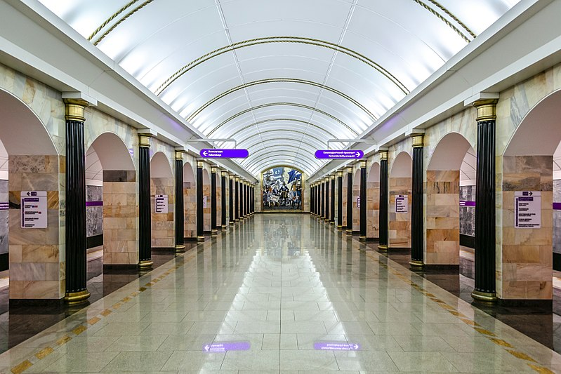
St.Petersburg metro station Admiralteiskaya
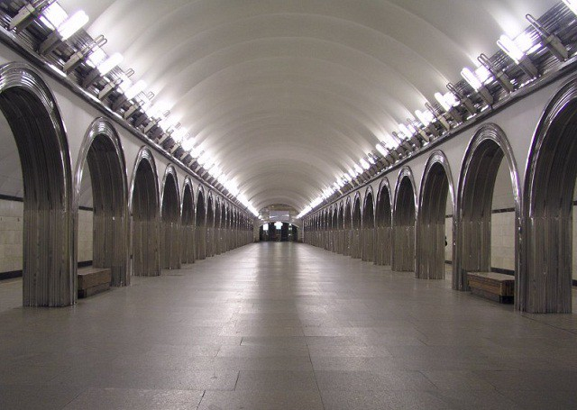
St.Petersburg metro station Akademicheskaya
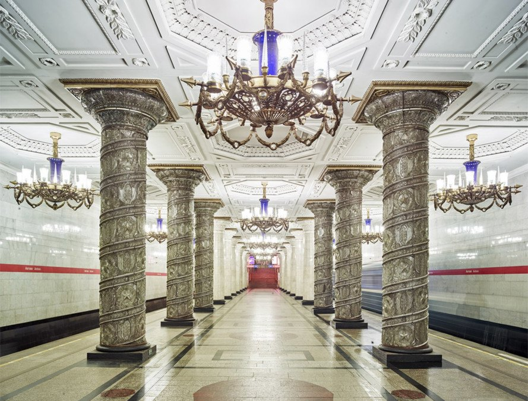
St.Petersburg metro station Avtovo
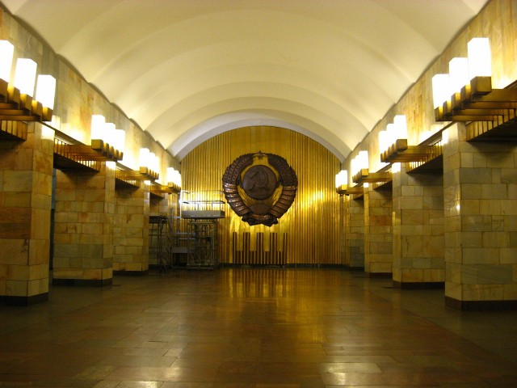
St.Petersburg metro station Grazhganskii Prospekt
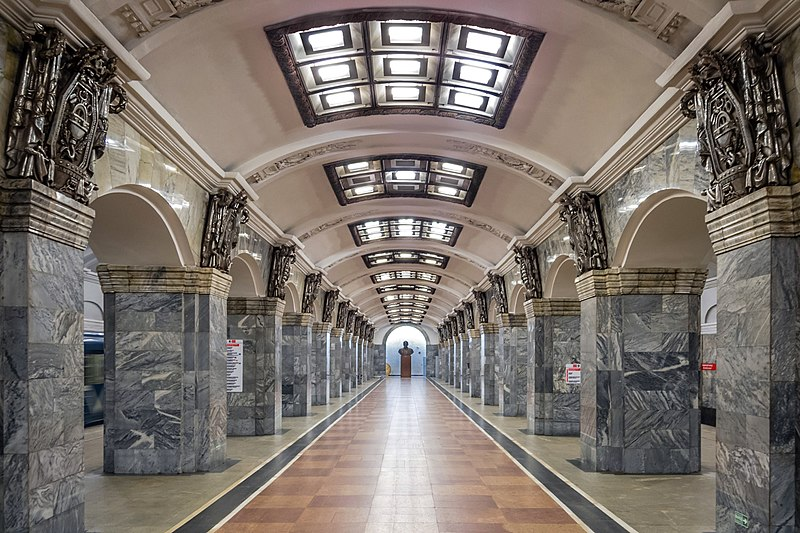
St.Petersburg metro station Kirovskii Zavod
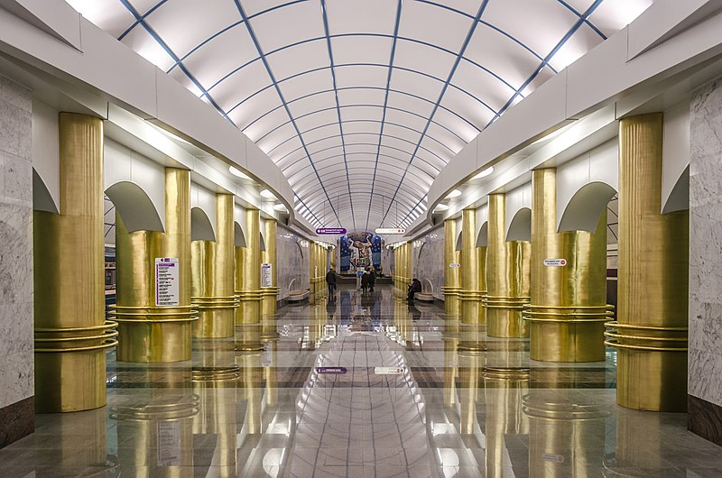
St.Petersburg metro station Mezhdunarodnaya
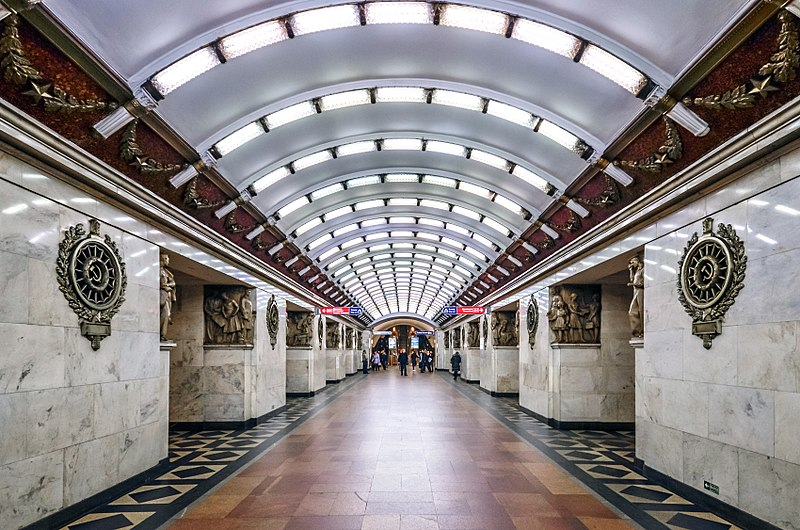
St.Petersburg metro station Narvskaya
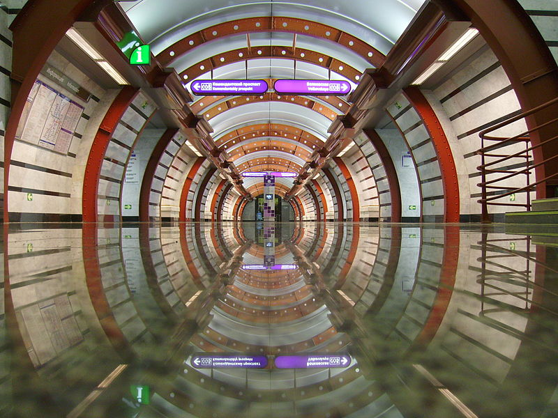
St.Petersburg metro station Obvodnoi Kanal
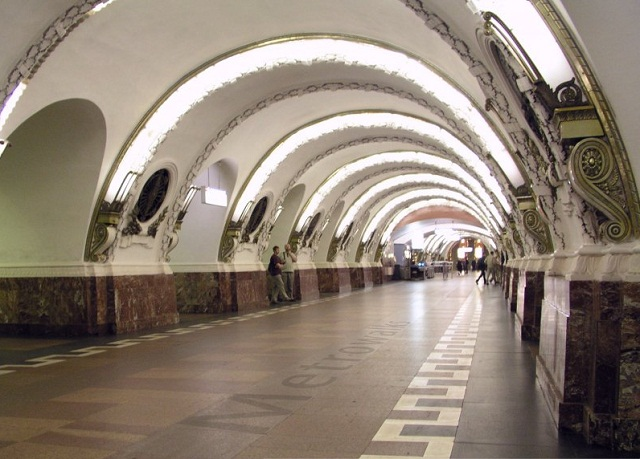
St.Petersburg metro station Plowad' Vosstaniya
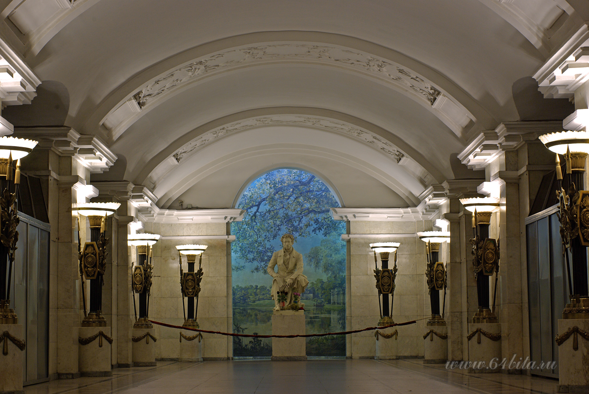
St.Petersburg metro station Pushkinskaya
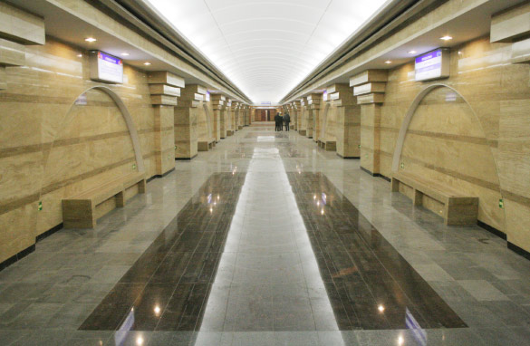
St.Petersburg metro station Spasskaya
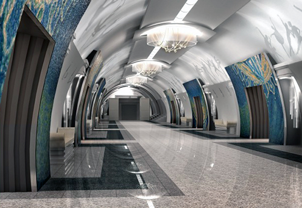
St.Petersburg metro station Teatral'naya